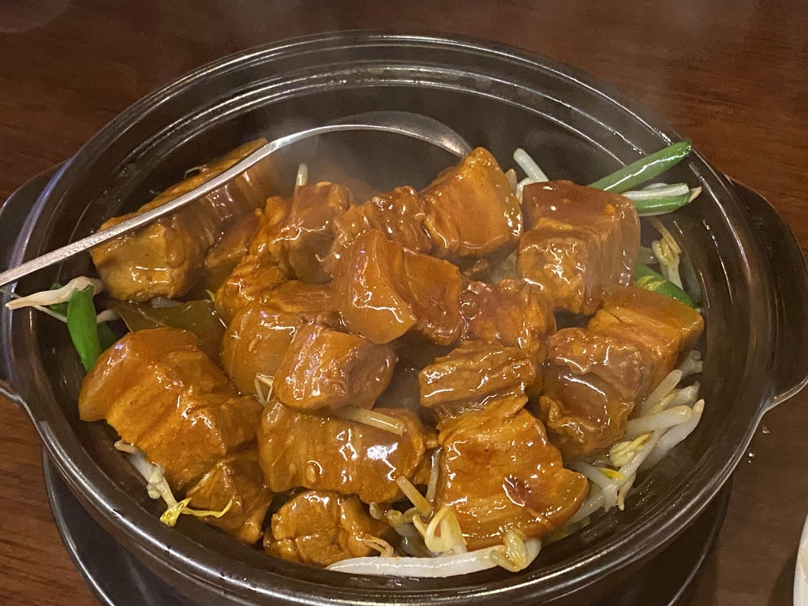
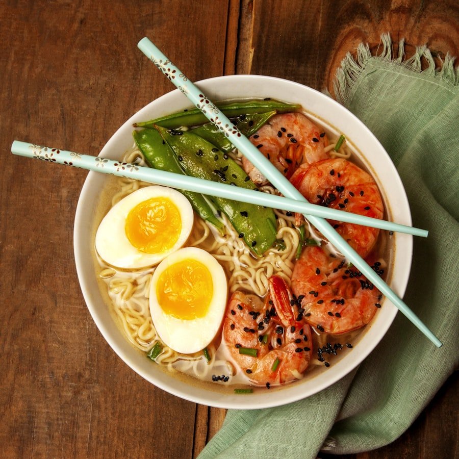

李师傅，接单中
评分 4.9 · 已认证骑手 · 重庆开州
18完成单
¥286今日收入
42km里程
98%准时率
当前配送任务
配送中
川味小厨（开州建委店）
取餐码 6402 · 预计 12:05 前送达
¥6.5
取滨湖路 8 号，商家距您 0.8km
送中央国际 B 区 3 栋 1802
附近可抢订单
全部
开州小面馆
商家 0.8km · 用户 2.4km · 22分钟
¥6.5